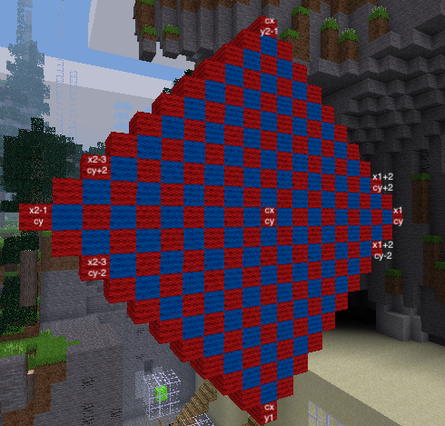

Construct a vertical diamond shape of alternating wool colours in the sky with height of 21 blocks
Most of the code is similar to the chequered square. This challenge is to come up with formulae for xlo and yhi, the low and high values of x where you want to place blocks. And remember, the hints can be your friend.
